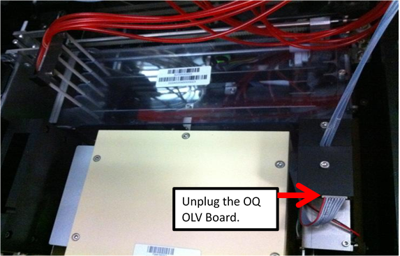
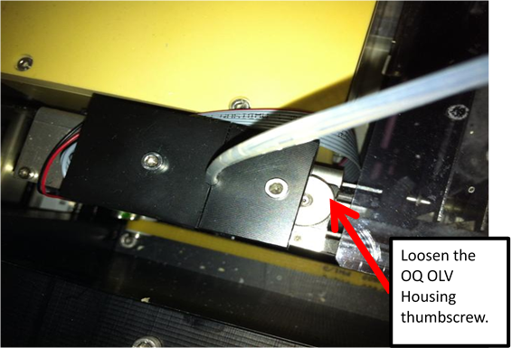
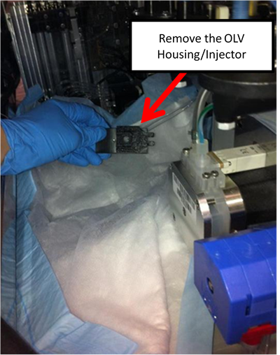
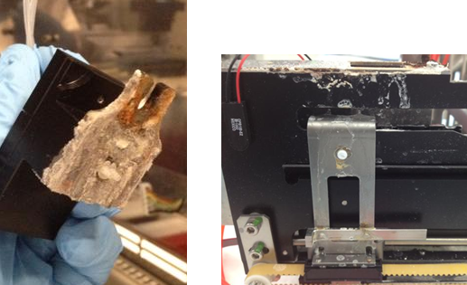
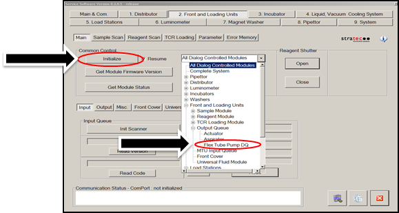
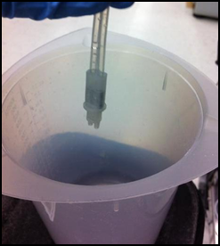
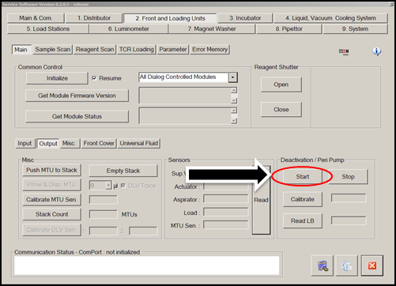
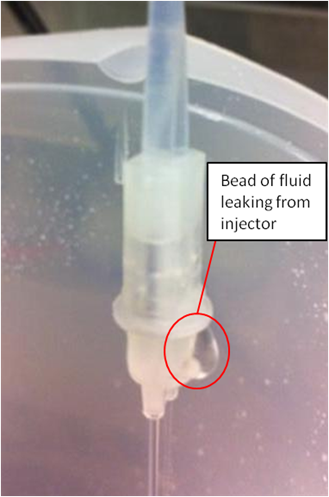

Checking the Output Queue Injector for Leaks
Purpose
Instructions for checking the Output Queue Injector for leaks.
Things to Remember
If the Deactivation Pump is more than 3 months old, replace it according to Peristaltic Pump Assembly Removal and Replacement.
If the Output Queue Injectors are more than 6 months old, replace them according to Output Queue Injector Removal and Replacement.
Parts and Materials Required
- Proper PPE
- Dow Corning High Vacuum O-ring Grease
- (Optional) Universal Kit B
Parts
- Deactivation Pump, Tubing Set, in needed or older than 3 months [P/N 903259]
- Output Q, Injector, if needed, or older than 6 months [P/N 902847]
Time Required
- 1 hour for the Service Procedure and Verification
Procedure
|
|
WARNING—The Output Queue is a “dirty” area. Be very conscientious of contamination risks. If necessary, review Biohazard Warnings and Precautions. |
- Put on proper PPE.
- Power down the Panther System.
- Replace Buffer bottle “B” with a service bottle in order to keep the Panther inventory current. (Be prepared to replace the Universal Kit B following service.)
- Top off the bleach bottle.
- Open the Right Side system panel.
 Unplug the Output Queue OLV Board.
Unplug the Output Queue OLV Board.

- Loosen the Output Queue OLV Housing thumbscrew.

- Place an absorbent pad over the Output Queue for protection.
- Remove the Output Queue OLV Housing/Injector (the Output Queue Injector will still be connected to the pump) and place on the absorbent pad.,

- Examine both the OLV Housing and the OLV Housing mount location. If either is excessively crusted with dried bleach, the OQ Injector has been leaking and should be replaced.

- Remove the Injector and OLV board from Housing.
- Power on the Panther System.
- In Service Software under the 2. Front and Loading Units tab, select Flex Tube Pump DQ from the dropdown and click Initialize.

- Place the Injector over an empty container.

- In the Deactivation / Peri Pump section of the Front and Loading Units tab in Service Software, select Start to run the Peri Pump and observe the OQ Injector.


Note—If either stream does not dispense, check all connections, or the Peri Pump tubing may need to be replaced. OR, if the Peri Pump tubing is more than 3 months old, replace it. - Once fluid is being dispensed, look at the Output Queue Injector. Look for any places where fluid is escaping the Injector body.

- When your observation is finished, in Service Software, select Stop.
- If the injector leaks, replace it according to Output Queue Injector Removal and Replacement.
- Verify the new injector does not leak.
- After installation, perform Cleaning and Applying Grease to the Output Queue Injector.
- Reinstall the OLV Housing/Injector on the Output Queue.
- Tighten the Output Queue OLV Housing thumbscrew.
- Plug in the Output Queue OLV Board.
- Remove the absorbent pad.
- Close the Right Side system panel.
- Replace the original Buffer B bottle OR replace Universal Fluids kit B.
- Top off the bleach bottle as needed.
- Proceed to Verification.
Verification
- Start the Panther GUI.
- Perform a Full Prime Operation of pumping fluid through tubing to ensure proper and consistent fluid delivery (remove air from the tubing, etc.)..
- Confirm no Output Queue dispense errors occur during the Full Prime.
- Verification is complete.
 button at the top of the page to send feedback, comments, or change requests.
button at the top of the page to send feedback, comments, or change requests.